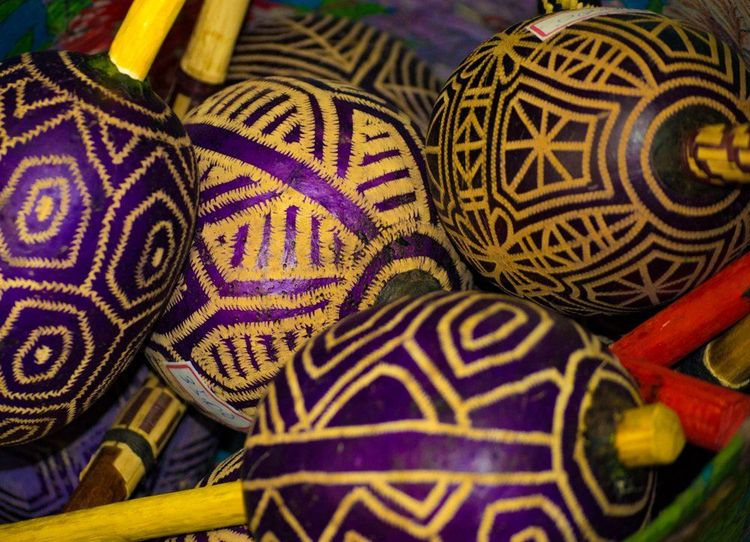

Native Traditions

Jamaica is an island full of folklore, magic,
and spirituality, with a rich culture of traditions, customs,
and rituals, many of them religious in origin. They do revivalism
ceremonies, the nine nights ritual, obeah, and many other rituals.